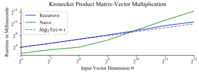
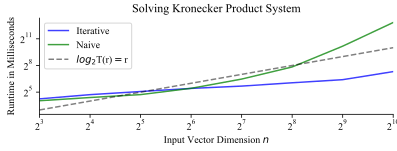

In this post, we consider a matrix \(\boldsymbol{A} \in\mathbb{R}^{m\times n}\) which is structured as the Kronecker product of \(r\) sub-matrices \(\boldsymbol{A}_1,\boldsymbol{A}_2,\ldots,\boldsymbol{A}_r\) where each \(\boldsymbol{A}_i\in\mathbb{R}^{c_i\times d_i}\). We will focus on computing the matrix-vector product \(\boldsymbol{Ax} = (\boldsymbol{A}_r\otimes\cdots\otimes\boldsymbol{A}_1)\boldsymbol{x}\) and solving the system \(\boldsymbol{Ax} = (\boldsymbol{A}_r\otimes\cdots\otimes\boldsymbol{A}_1)\boldsymbol{x} = \boldsymbol{y}\). When all \(c_i=d_i=c\) uniformly, then it turns out we can both compute the matrix-vector product and solve the system in \(\sim 2\tfrac{c}{\log c}n\log n\) floating point operations, much faster than the naive \(\Theta(n^2)\) or \(\Theta(n^3)\) floating point operations, respectively, one would need in this dimension without taking advantage of structure. We illustrate the speedup of our methods in realistic benchmarks using code that we make freely available online [1, 2].
Our hope for being able to compute \(\boldsymbol{Ax} = (\boldsymbol{A}_r \otimes \cdots \otimes \boldsymbol{A}_1)\boldsymbol{x}\) efficiently stems from the fact that the matrix \(\boldsymbol{A}\) is defined by at most \(rc^2\) parameters, potentially much less than the \(n^2\) parameters present in a generic matrix \(\boldsymbol{A}\) of this same dimension.
To turn this hope into computational leverage, we rely on the equivalence of the statements $$\boldsymbol{y} = (\boldsymbol{B}\otimes\boldsymbol{C})\boldsymbol{x} \,\text{ and } \operatorname{reshape}(\boldsymbol{y},c',b') = \boldsymbol{C}\operatorname{reshape}(\boldsymbol{x},c,b)\boldsymbol{B}^\mathsf{T}$$ when \(\boldsymbol{B}\in\mathbb{R}^{b'\times b}\), \(\boldsymbol{C}\in\mathbb{R}^{c'\times c}\), and \(\operatorname{reshape}(\boldsymbol{z},m,n)\) is the \(m\times n\) matrix defined implicitly so that stacking its columns top-to-bottom into a vector gives \(\boldsymbol{z}\). See [3, Sec. 1.3.7] for more details.
In our case, write the desired quantity \(\boldsymbol{y} = (\boldsymbol{A}_r \otimes \cdots \otimes \boldsymbol{A}_1)\boldsymbol{x}\). Then by associativity of the Kronecker product and the "reshape" identity mentioned above, this is equivalent to $$ \operatorname{reshape}(\boldsymbol{y},\tfrac{m}{c_r},c_r) = (\boldsymbol{A}_{r-1}\otimes\cdots\otimes\boldsymbol{A}_1) \operatorname{reshape}(\boldsymbol{x},\tfrac{n}{d_r},d_r)\boldsymbol{A}_r^\mathsf{T}. $$ Rewriting \(\boldsymbol{Z} = \operatorname{reshape}(\boldsymbol{x},\tfrac{n}{d_r},d_r)\boldsymbol{A}_r^\mathsf{T} = [\boldsymbol{z}_1,\ldots,\boldsymbol{z}_{d_1}]\), we have just represented each column of \(\operatorname{reshape}(\boldsymbol{y},\tfrac{m}{c_r},c_r)\) as the Kronecker matrix-vector product \((\boldsymbol{A}_{r-1} \otimes \cdots \otimes \boldsymbol{A}_1)\boldsymbol{z}_i\). Computing these columns recursively gives the desired algorithm for computing \((\boldsymbol{A}_r \otimes \cdots \otimes \boldsymbol{A}_1)\boldsymbol{x}\), written as pseudo-code below.
function y = kronmatvec(A[r,...,1], x)
if r equals 1
return A[r] * x
end
Let n, c, d = length(x), shape(A[r])[0], shape(A[r])[1]
Reshape x = reshape(x, n / d, d)
Compute Z = x * transpose(A[r])
for each column i = 1,2,...,c
Compute Y[:,i] = kronmatvec(A[r-1,...,1],Z[:,i])
end
return vec(Y)
end
Write \(T(r)\) for the number of floating point operations used in a call to kronmatvec(A[r,...,1], x). We have \(T(1) \leq 2c_1d_1\), and more generally $$T(k) \leq d_k T(k-1) + 2nc_k \leq c T(k-1) + 2c^{k+1}$$ if we write \(c = \max_{i=1,\ldots,r} \max\{c_i,d_i\}.\) Solving this recurrence gives $$T(r) \leq 2r c^{r+1} \text{ floating point operations.}$$ In the case that \(c_i=d_i=c\) uniformly (i.e. all the sub-matrices \(\boldsymbol{A}_i\) are square and have the same shape,) we have \(n = c^r\) and this reduces to $$T(r) \leq 2\tfrac{c}{\log c}n\log n \text{ floating point operations.}$$
This link [1] gives a NumPy implementation of the function kronmatvec(A[r,...,1], x) detailed above assuming each \(c_i=d_i\) for simplicity, as well as code to run the benchmarks we discuss here.
To benchmark this implementation against a naive method, we make the assumption that \(\boldsymbol{A}_1,\ldots,\boldsymbol{A}_r,\boldsymbol{x}\) are given (and not \(\boldsymbol{A} = \boldsymbol{A}_r\otimes\cdots\otimes\boldsymbol{A}_1\)) as input, at which point we are asked to produce the vector \((\boldsymbol{A}_r\otimes\cdots\otimes\boldsymbol{A}_1)\boldsymbol{x}.\) For randomly generated input matrices with all \(c_i=d_i=2\) and \(r=6,7,\ldots,12\) we run the kronmatvec(A[r,...,1], x) recursive algorithm as well as the naive method of explicitly computing the Kronecker product \(\boldsymbol{A} = \boldsymbol{A}_r\otimes\cdots\otimes \boldsymbol{A}_1\) before computing \(\boldsymbol{Ax}\) via standard matrix multiplication. The resulting runtimes given below are the average of 250 runs, reported as the minimum of five independent such averages.
| \(r\) | \(n = 2^r\) | Recursive (ms) | Naive (ms) | Speedup |
|---|---|---|---|---|
| 6 | 64 | 67.42 | 22.91 | -194% |
| 7 | 128 | 130.5 | 42.45 | -207% |
| 8 | 256 | 274.9 | 65.68 | -318% |
| 9 | 512 | 570.6 | 228.0 | -150% |
| 10 | 1024 | 1241 | 1369 | 9.37% |
| 11 | 2048 | 2986 | 7688 | 61.1% |
| 12 | 4096 | 38280 | 5728.8 | 85.0% |
Table 1: Comparison of our recursive method for computing \((\boldsymbol{A}_r \otimes \cdots \otimes \boldsymbol{A}_1)\boldsymbol{x}\) with the naive method.
Observe that the un-optimized, recursively implemented algorithm is slower for small matrices, but achieves noticeable speedups over the naive approach as soon as \(n \geq 1000\). In the face of further optimization, such as rewriting the algorithm to be iterative instead of recursive and moving the expensive steps into a lower level language like C (via Cython, for example,) these speedups would be more drastic and achievable for even smaller \(n\).
To verify our bound above that \(T(r) = \mathcal{O}(n \log n)\) we can plot the results of Table 1 in log-log scale. If \(T(r) \leq k n \log_2 n = kr2^r\) for some constant \(k\), then \(\log_2 T(r) \leq \log_2 k + \log_2 r + r\), which is asymptotically equivalent to \(r\). Indeed, we see this behavior in practice; see Figure 2.
Figure 2: The results of Table 1 presented on a log-log scale. Note how \(\log_2 T(r)\) is visibly linear as a function of \(r\).
Simply computing the matrix-vector product \((\boldsymbol{A}_1 \otimes \cdots \otimes \boldsymbol{A}_r)\boldsymbol{x}\) seems straightforward enough, but we were still able to achieve significant performance gains both theoretically and practically by taking advantage of the Kronecker product structure. In this section we illustrate how to do achieve similarly remarkable speedups in the more complicated setting of solving the linear system \((\boldsymbol{A}_1 \otimes \cdots \otimes \boldsymbol{A}_r)\boldsymbol{x}=\boldsymbol{b}\). For simplicity, in this section we will assume each \(\boldsymbol{A}_i \in \mathbb{R}^{c_i\times c_i}\) is square and positive definite.
Our first method for solving the system \((\boldsymbol{A}_1 \otimes \cdots \otimes \boldsymbol{A}_r)\boldsymbol{x}\) is easy to describe given our discussion above. This is because to solve a system \(\boldsymbol{Ax}=\boldsymbol{y}\), it suffices in terms of floating point operations to compute \(n\) matrix-vector multiplies via the Conjugate Gradients algorithm [3, Alg. 11.5.1]. Indeed, if we can compute \(\boldsymbol{Ax}\) in \(T(n)\) floating point operations where \(T(n)/n \to \infty\) as \(n\) increases, the Conjugate Gradients algorithm gives a method for solving a system \(\boldsymbol{Ax}=\boldsymbol{y}\) in \(n T(n)\) floating point operations, to leading order. In the setting that each \(c_i = c\), we have \(T(n) = 2\tfrac{c}{\log c}n\log n\), so we can solve the system via the Conjugate Gradients algorithm and our fast matrix-vector multiplication algorithm in \(\sim 2\tfrac{c}{\log c}n^2\log n\) floating point operations. This is much faster than the \(\Theta(n^3)\) floating point operations required by, say, Gauss-Jordan elimination or similarly general algorithms.
Our second method also relies on the above methods heavily, but starts back at the "reshape" identity. This says that \(\boldsymbol{y} = (\boldsymbol{A}_r \otimes \cdots \otimes \boldsymbol{A}_1)\boldsymbol{x}\) is equivalent to the statement $$ \operatorname{reshape}(\boldsymbol{y},\tfrac{n}{c_r},c_r) = (\boldsymbol{A}_{r-1}\otimes\cdots\otimes\boldsymbol{A}_1) \operatorname{reshape}(\boldsymbol{x},\tfrac{n}{c_r},c_r)\boldsymbol{A}_r^\mathsf{T}. $$ In particular, $$ (\boldsymbol{A}_{r-1}\otimes\cdots\otimes\boldsymbol{A}_1) \operatorname{reshape}(\boldsymbol{x},\tfrac{n}{c_r},c_r) = \operatorname{reshape}(\boldsymbol{y},\tfrac{n}{c_r},c_r)\boldsymbol{A}_r^\mathsf{-T}, $$ which naturally gives the following recursive algorithm for solving \(\boldsymbol{y} = (\boldsymbol{A}_r \otimes \cdots \otimes \boldsymbol{A}_1)\boldsymbol{x}\).
function x = kronsolve(A[r,...,1], y)
if r equals 1
return A[r] \ y
end
Let n, c = length(y), shape(A[r])[0]
Reshape y = reshape(y, n / c, c)
Compute Z = transpose(A[r] \ transpose(y))
for each column i = 1,2,...,c
Compute X[:,i] = kronmatvec(A[r-1,...,1],Z[:,i])
end
return vec(X)
end
Conveniently, this recursive algorithm is easily converted into an iterative one. That iterative version is what we compare against in the numerical benchmark below.
In an iterative implementation, we only have to compute a Cholesky factor of each sub-matrix \(\boldsymbol{A}_i\) once, and hence spend \(\tfrac{1}{3}(c_1^3 + c_2^3 + \cdots + c_r^3)\) floating point operations on this task to leading order. The only remaining work is to compute a \(c_i\)-dimensional Cholesky-solve \(n/c_i\) times for every \(i=1,2,\ldots,r\). Each of these requires \(2\tfrac{n}{c_i}c_i^2 = 2nc_i\) floating point operations, for a total of \(2n (c_1+c_2+\cdots+c_r)\). All in all, an iterative implementation of kronsolve(A[r,...,1], y) uses $$T(r) = \tfrac{1}{3}(c_1^3 + c_2^3 + \cdots + c_r^3) + n(c_1 + c_2 + \cdots + c_r)$$ floating point operations. When all \(c_i = c\) uniformly, this reduces to $$T(r) = \tfrac{1}{3}rc^3 + 2crn = \tfrac{c^3}{\log c^3}\log n + 2\tfrac{c}{\log c}n \log n,$$ only a logarithmic number of floating point operations greater than our method for multiplying this Kronecker matrix by a vector.
This link [2] gives an iterative NumPy implementation of the function kronsolve(A[r,...,1], y) detailed above assuming each \(c_i=d_i\) for simplicity, as well as code to run the benchmarks we discuss here.
Our benchmark is structured the same as the matrix-vector multiply case presented above, except now we iterate on a \(r=3,4,\ldots,10\), comparing our iterative implementation of kronmatsolve(A[r,...,1], y) to the naive method of explicitly computing the Kronecker product and then using a Cholesky factor-solve approach. The Conjugate-Gradients method was much slower in practice than the naive method for these input sizes, and as a result we did not include it in the comparison.
| \(r\) | \(n = 2^r\) | Iterative (ms) | Naive (ms) | Speedup |
|---|---|---|---|---|
| 3 | 8 | 19.03 | 16.42 | -15.8% |
| 4 | 16 | 26.37 | 21.09 | -25.0% |
| 5 | 32 | 33.67 | 26.45 | -27.2% |
| 6 | 64 | 42.89 | 43.24 | 0.79% |
| 7 | 128 | 51.34 | 88.76 | 42.1% |
| 8 | 256 | 66.51 | 228.2 | 70.8% |
| 9 | 512 | 84.68 | 1153 | 92.6% |
| 10 | 1024 | 159.0 | 7292 | 97.8% |
Table 3: Comparison of our method for solving the system \((\boldsymbol{A}_r \otimes \cdots \otimes \boldsymbol{A}_1)\boldsymbol{x} = \boldsymbol{y}\) with the naive method.
Since we were able to implement this theoretically faster method iteratively, the speedup is seen much faster than the matrix-vector multiply method seen earlier in this post. Our method outperforms the naive method for \(n \geq 64\), and quickly thereafter becomes far superior. Indeed, even for matrices of size \(n = 512\), the naive method is 13.6 times slower than the iterative method taking advantage of Kronecker structure.
To verify our bound above that \(T(r) = \mathcal{O}(n \log n)\) we can plot the results of Table 3 in log-log scale. If \(T(r) \leq k n \log_2 n = kr2^r\) for some constant \(k\), then \(\log_2 T(r) \leq \log_2 k + \log_2 r + r \sim r\), as we explained previously. As with the matrix-vector multiply method, we can see this in practice in Figure 4.
Figure 4: The results of Table 3 presented on a log-log scale. Note how visibly \(\log_2 T(r) \leq r\). as \(r\) grows.
Note: To learn more about taking advantage of Kronecker product structure, take a look at Section 1.3.6-1.3.8 in Golub and Van Loan's book Matrix Computations [2], as well as the associated exercises. This blog post provides a solution to exercise P1.3.9, for example.
kronmatvec.py by Conner DiPaolo. Github Gist. June 2019.kronsolve.py by Conner DiPaolo. Github Gist. June 2019.Date: July 28, 2019